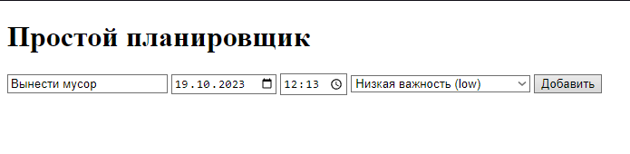

-
Веб-планировщик. Работа с базой данных
Маша освоила базовые знания и немного отдохнула на каникулах, так что теперь она готовится к созданию социальной сети. Но так как она работала не одна, а с Медведем, им необходим инструмент для организации процесса их деятельности. Мудрый наставник предложил создать планировщик.
Цель этого занятия – подготовка базы данных для хранения задач планировщика и написание структуры сайта.
Задачи занятия:
- Подготовить рабочую область.
- Добавить новую таблицу для хранения задач.
- Создать структуру сайта.
- Прописать запросы для переноса информации с сайта в базу данных.
Подготовка. Создание новой базы данных для будущего планера
Для начала, как и всегда, нужно подготовить базу данных для хранения информации. В качестве нее будет использоваться "запылившаяся" база данных "test". В ней создадим новую таблицу под необходимый инструмент, но для начала откроем phpMyAdmin.
|
Планировщик – это инструмент или приложение, которое помогает вам организовать свою работу и управлять временем. Он позволяет создавать список задач или событий, устанавливать им приоритеты, даты и время выполнения, чтобы вы могли следить за своими обязанностями и помнить о самом важном. Планировщик помогает быть более организованным, продуктивным и ничего не забывать.
|
Перейдем в AMPPS, пункт управления (рис. 1.1). Нас переносит на домашнюю страницу Apache AMPPS. Находим раздел "Database Tools". Внутри него лежит нужная нам ссылка "phpMyAdmin", нажимаем на нее (рис. 1.2).
|
Рис. 1.1. Переход на сайт управления базами
|
Рис. 1.2. Ссылка на phpMyAdmin
|
Запускается приветственное окно, в котором потребуется ввести пользователя (root) и пароль (mysql, рис. 1.3). Попадаем на главную страницу разработки и далее открываем уже знакомую базу данных "test" или создаем новую (рис. 1.4).
Рис. 1.3. Авторизация в phpMyAdmin
|
|
Рис. 1.4. Главная страница
Далее, перейдя в базу данных, создаем новую таблицу с названием "tasks" и 5 колонками (рис. 1.5). Теперь настроим поля таблицы и сохраним (рис. 1.7):
- "id" – номер строки таблицы. Указываем Тип данных (INT), Первичный ключ (Индекс) и Автонумерацию (A_I);
- "task" – название задачи. Указываем Тип данных (VARCHAR), Длину (255);
- "task_date" – дата (последнего дня на выполнение задачи). Указываем Тип данных (DATE);
- "task_time" – время (к какому времени необходимо выполнить задачу). Указываем Тип данных (TIME);
- "priority" – виды приоритетов задач. Указываем Тип данных (ENUM). В столбце Длина/Значение нажимаем на "Редактировать значения" и вписываем фиксированный список возможных значений в поле (low, medium, high, рис. 1.6).
|
Тип данных ENUM – это тип данных в реляционных базах данных, который предназначен для хранения набора допустимых значений. Он позволяет ограничить возможные значения для конкретного столбца в таблице на определенные варианты.
|
Рис. 1.5. Создание новой таблицы
Рис. 1.6. Настройки значений типа данных ENUM
Рис. 1.7. Настройка полей таблицы "tasks"

|
В нашем случае есть столбец "Приоритет" в таблице задач. Вы знаете, что приоритет задачи может быть только одним из трех: "Низкая важность", "Средняя важность" или "Высокая важность". Вместо того чтобы разрешить любое значение, вы можете определить столбец "Приоритет" как ENUM и перечислить допустимые значения (low, medium, high). Теперь этот столбец будет принимать только одно из указанных значений, что обеспечивает контроль над данными и упрощает их анализ.
|
По итогу должна получиться таблица со следующей структурой (рис. 1.6):
Рис. 1.8. Настройки значений типа данных ENUM
-
Создание рабочей области и html-документа
База создана, пора переходить к работе. Первым шагом будет настройка рабочей области. Добавим новую папку для планировщика в папке AMPPS > www и назовем ее "plan" (рис. 1.7). Далее откроем ее в Visual Studio Code (рис. 1.8) и настроим структуру проекта (рис. 1.9).
Рис. 1.9. Создание папки для планировщика
Рис. 1.10. Открытие папки в Visual Studio Code
Рис. 1.11. Структура проекта
Приступим! Начнем со "cкелета" – структуры сайта (html-документ). Необходимо создать форму, в которую входят следующие поля:
- "Название задачи" – текстовое поле ввода.
- "Дата" – поле ввода даты.
- "Время" – поле ввода времени.
- "Приоритет" – виды приоритетов задач. Тоже фиксированный выбор из списка.
- "Отправить" – кнопка для отправки данных в базу данных.
Также сразу пропишем и продумаем место для вывода списка запланированных задач и получим следующую картину (рис. 1.10).
|
<action> – атрибут, в котором указывается ссылка обработчика значений. То есть элемент, который указан в <action>, будет обрабатывать значения формы. Если его не указать, то все значения вернутся к исходному значению, обновляя страницу.
|
index.php:
<!DOCTYPE html>
<html lang="en">
<head>
<meta charset="UTF-8">
<meta name="viewport" content="device-width, initial-scale=1.0">
<title>Простой планировщик</title>
<link rel="stylesheet" type="text/css" href="css/style.css">
</head>
<body>
<h1>Простой планировщик</h1>
<div id="app">
<!-- Форма для добавления задачи (в атрибуте action указываю будущий файл отвечающий за отправкуданных) -->
<form action="add_task.php" method="post">
<input type="text" name="task" placeholder="Добавить задачу" required>
<input type="date" name="task_date" required>
<input type="time" name="task_time" required>
<select name="priority" required>
<option value="low">Низкая важность (low)</option>
<option value="medium">Средняя важность (medium)</option>
<option value="high">Высокая важность (high)</option>
</select>
<button type="submit">Добавить</button>
</form>
<!-- Список задач -->
<ul id="task-list">
<!-- Здесь будут отображаться задачи -->
</ul>
</div>
<!-- Подключение JavaScript -->
<script src="js/script.js"></script>
</body>
</html>
|

Рис. 1.12. Структура страницы планировщика
Теперь, когда форма для отправки написана, пропишем подключение и передачу информации в ранее созданную таблицу "tasks". Для этого добавим еще один файл в корневой папке "plan"
, назовем "add_task.php" (рис. 1.11). Пропишем в нем код для добавления задачи в таблицу (рис. 1.12 – 1.13).
|
SQL-инъекции – это вид атаки на базы данных, при котором злоумышленник вводит вредоносные SQL-запросы в поля ввода веб-приложения. Эти запросы могут быть специально созданы таким образом, чтобы получить несанкционированный доступ к данным или даже повредить базу данных.
Например, если веб-приложение не должно разрешать доступ к определенным данным, но не проверяет или не фильтрует входные данные должным образом, злоумышленник может ввести SQL-код в поле поиска или ввода данных и выполнить запросы, которые могут потенциально получить, изменить или удалить данные из базы данных.
Чтобы защититься от SQL-инъекций, важно правильно обрабатывать входные данные, используя параметризованные запросы, валидацию данных и правильные методы фильтрации. Это позволяет минимизировать уязвимости и обеспечивает безопасность базы данных.
|
Рис. 1.1. Ввод новой задачи в планировщик
add_task.php:
<?php
$host = "localhost"; // Хост базы данных
$username = "root"; // Имя пользователя базы данных
$password = "mysql"; // Пароль пользователя базы данных
$database = "test"; // Имя базы данных
$connection = mysqli_connect($host, $username, $password, $database); // Устанавливаем соединение с базой данных
if (!$connection) { // Если соединение не удалось
die("Ошибка подключения: " . mysqli_connect_error()); // Выводим сообщение об ошибке и завершаем выполнение скрипта
}
if (
isset($_POST['task']) && !empty($_POST['task']) && // Проверяем, была ли отправлена форма и поля 'task'...
isset($_POST['task_date']) && !empty($_POST['task_date']) && // ...'task_date'...
isset($_POST['task_time']) && !empty($_POST['task_time']) && // ...'task_time'...
isset($_POST['priority']) && !empty($_POST['priority']) // ...и 'priority' содержат данные
) {
$task = mysqli_real_escape_string($connection, $_POST['task']); // Защищаем данные от SQL-инъекций
$task_date = mysqli_real_escape_string($connection, $_POST['task_date']); // Защищаем данные от SQL-инъекций
$task_time = mysqli_real_escape_string($connection, $_POST['task_time']); // Защищаем данные от SQL-инъекций
$priority = mysqli_real_escape_string($connection, $_POST['priority']); // Защищаем данные от SQL-инъекций
// Создаем SQL-запрос для вставки новой задачи в базу данных
$query = "INSERT INTO tasks (task, task_date, task_time, priority) VALUES ('$task', '$task_date', '$task_time', '$priority')";
// Выполняем SQL-запрос
$result = mysqli_query($connection, $query);
if ($result) { // Если запрос выполнился успешно
header("Location: index.php"); // Перенаправляем пользователя на главную страницу
} else { // Если запрос не выполнен успешно
echo "Ошибка при добавлении задачи"; // Выводим сообщение об ошибке
}
}
mysqli_close($connection); // Закрываем соединение с базой данных
?>
|

Рис. 1.13. Ввод новой задачи в планировщик

Рис. 1.14. Добавленные в таблицу базы данных задачи
На этом первое занятие окончено!
В рамках этого занятия мы подготовили базу данных для хранения задач планировщика и разработали структуру сайта.
На следующем занятии мы реализуем возможность вывода всех задач на сайт, а также их удаление из списка. Поработаем над стилем всех элементам.
После прохождения каждого занятия рекомендуем повторить все термины, которые были изучены, а также закрепить пройденный материал, ответив на контрольные вопросы.
Это нужно запомнить
|
|
|
Планировщик – это инструмент или приложение, которое помогает вам организовать свою работу и управлять временем. Он позволяет создавать список задач или событий, устанавливать им приоритеты, даты и время выполнения, чтобы вы могли следить за своими обязанностями и помнить о самом важном. Планировщик помогает быть более организованным, продуктивным и ничего не забывать.
Тип данных
ENUM – это тип данных в реляционных базах данных, который предназначен для хранения набора допустимых значений. Он позволяет ограничить возможные значения для конкретного столбца в таблице на определенные варианты.
<action> – атрибут, в котором указывается ссылка обработчика значений. То есть элемент, который указан в <action>, будет обрабатывать значения формы. Если не указать его, то все значения вернутся к исходному значению, обновляя страницу.
SQL-инъекции – это вид атаки на базы данных, при котором злоумышленник вводит вредоносные SQL-запросы в поля ввода веб-приложения. Эти запросы могут быть специально созданы таким образом, чтобы получить несанкционированный доступ к данным или даже повредить базу данных.
Например, если веб-приложение не должно разрешать доступ к определенным данным, но не проверяет или не фильтрует входные данные должным образом, злоумышленник может ввести SQL-код в поле поиска или ввода данных и выполнить запросы, которые могут потенциально получить, изменить или удалить данные из базы данных.
Чтобы защититься от SQL-инъекций, важно правильно обрабатывать входные данные, используя параметризованные запросы, валидацию данных и правильные методы фильтрации. Это позволяет минимизировать уязвимости и обеспечивает безопасность базы данных.
|
-
Контрольные вопросы
- Какой тип данных БД хранит в себе фиксированный список значений?
- Назовите атрибут, хранящий ссылку на обработчик значений формы?
- На каком языке программирования пишутся запросы к базе данных?
- Выберите тип данных в БД, содержащий в себе дату?
|
Какие виды планировщиков существуют ?
Существует множество различных видов планировщиков, предназначенных для разных целей и задач. Вот некоторые из наиболее распространенных видов планировщиков:
- Ежедневники. Планировщики, предназначенные для организации дел и задач на день. Они обычно включают в себя ежедневные расписания, задачи и напоминания.
- Недельные и месячные планировщики. Эти планировщики охватывают более длительные временные периоды и позволяют планировать события, встречи и задачи на неделю, месяц и даже год.
- Деловые планировщики. Предназначены для более сложной организации рабочего времени и задач в рабочей среде. Они часто интегрируются с электронной почтой, календарями и другими офисными инструментами.
- Планировщики для управления проектами. Эти планировщики предназначены для планирования и управления проектами. Они позволяют создавать графики, назначать задачи, контролировать выполнение проектов и устанавливать сроки.
- Цифровые планировщики. Это программные приложения и онлайн-сервисы, которые позволяют вести планирование и управление задачами на компьютерах и мобильных устройствах.
- Физические планировщики. Бумажные или физические планировщики, такие как ежедневники и записные книжки, которые используются для записи задач, событий и заметок.
- Личные планировщики. Предназначены для личного использования и включают задачи, цели, планы и заметки для личного развития.
- Планировщики для учебы. Используются студентами и учащимися для управления учебными заданиями, расписаниями занятий и сроками сдачи работ.
- Финансовые планировщики. Помогают управлять финансами, бюджетом и инвестициями.
- Планировщики для здоровья и фитнеса. Предназначены для отслеживания физической активности, питания, медицинских процедур и здорового образа жизни.
- Онлайн-сервисы для совместного планирования. Позволяют пользователям совместно работать над задачами и проектами, обмениваться заметками и документами.
- Планировщики для путешествий. Помогают организовать поездки, бронировать билеты, отели и создавать планы маршрутов.
Это только небольшая часть существующих видов планировщиков. Выбор конкретного типа планировщика зависит от целей и потребностей пользователя.
|